96533.1.1 — Michlala Jerusalem College, 2026–2027
2026-11-26 09:27
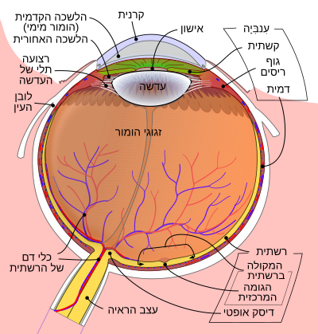
Source: Rhcastilhos, translated by benherz and Jmarchn, Wikimedia Commons, CC BY-SA 3.0
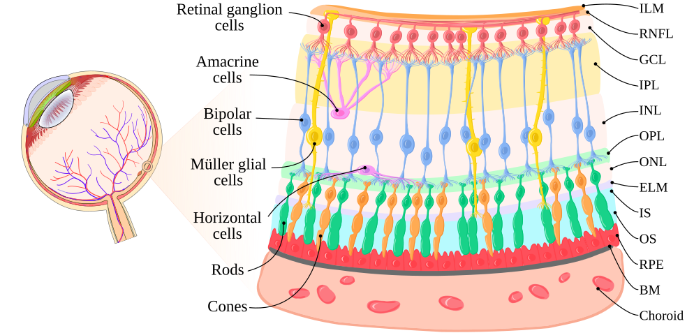
Source: Bfazek, Wikimedia Commons, CC BY-SA 4.0
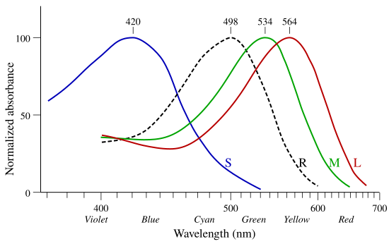
Source: Maxim Razin, DrBob and Zeimusu (after Bowmaker and Dartnall, 1980), Wikimedia Commons, CC BY-SA 3.0
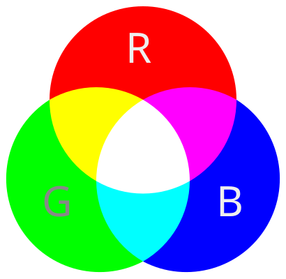
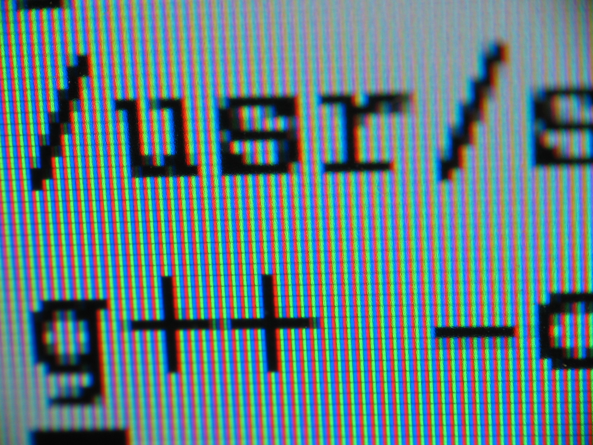
Sources: Immanuelle, Venn diagram rgb, CC BY-SA 4.0; Daniel Schwen, LCD Pixels Macro, CC BY-SA 2.5 (both Wikimedia Commons)
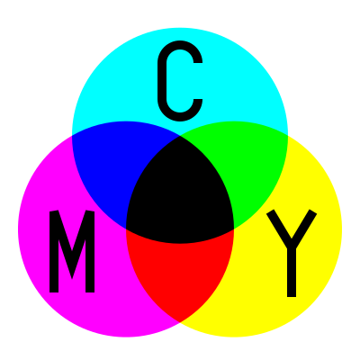
Sources: Immanuelle, Venn diagram rgb, CC BY-SA 4.0; SharkD and others, SubtractiveColor, public domain (both Wikimedia Commons)
Source: Magica, Subtractive color synthesis CMYK, Wikimedia Commons, CC BY-SA 4.0
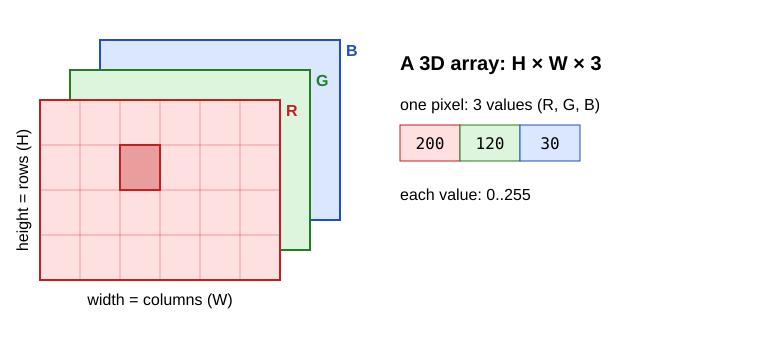
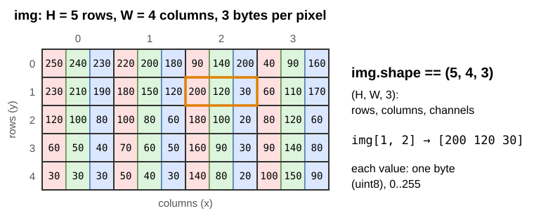
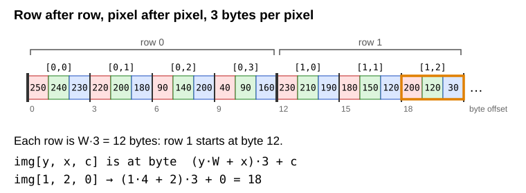
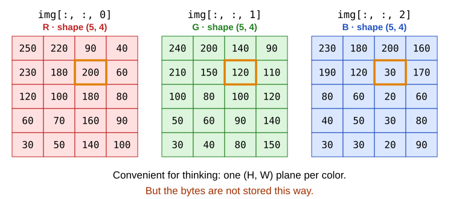
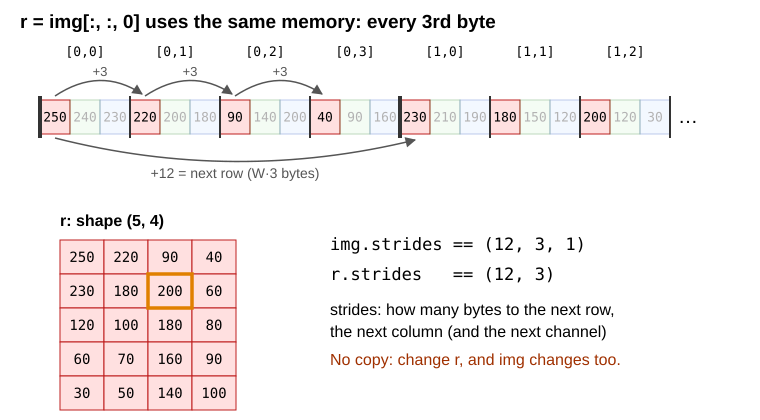
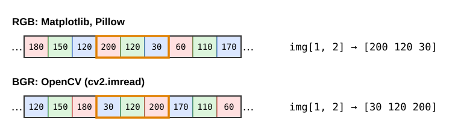
cv2.imread gives B, G, R: img[:, :, 0] is the blue channel.cv2.cvtColor(img, cv2.COLOR_BGR2RGB).shape == (H, W, 3) — rows, columns, channels.shape == (H, W) — one plane.img[row, col] — that is img[y, x], not img[x, y].0 .. 255.00000000 = 0, 11111111 = 255.11111111 + 1 = 1 00000000 → the 9th bit does not fit → 0
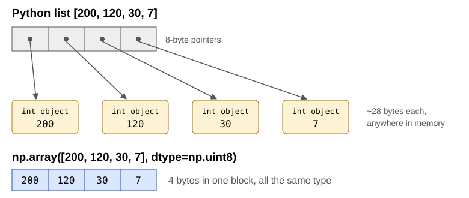
Brighten a 300 × 400 color image (360,000 values):
| time | |
|---|---|
| Python loop | ~100 ms |
| NumPy | ~1 ms |
code/loop_vs_numpy.py.dtype| dtype | bytes | range |
|---|---|---|
np.uint8 |
1 | 0 .. 255 |
np.int16 |
2 | −32,768 .. 32,767 |
np.int32 |
4 | about ±2.1 billion |
np.float32 |
4 | ~7 significant digits |
np.float64 |
8 | ~16 significant digits |
Images are almost always uint8.
For a color image: shape == (H, W, 3), ndim == 3.
No loops: one expression works on the whole array.
max(axis=...): the axis you name disappears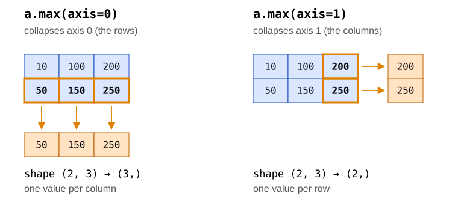
axis=0 runs down the rows → one result per column. axis=1 runs along a row → one result per row.min, sum, mean, ...axis=1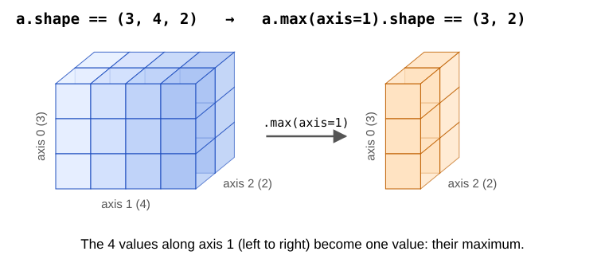
(3, 4, 2) without axis 1 → (3, 2). Rule: remove the named axis from the shape.axis=1, with numbers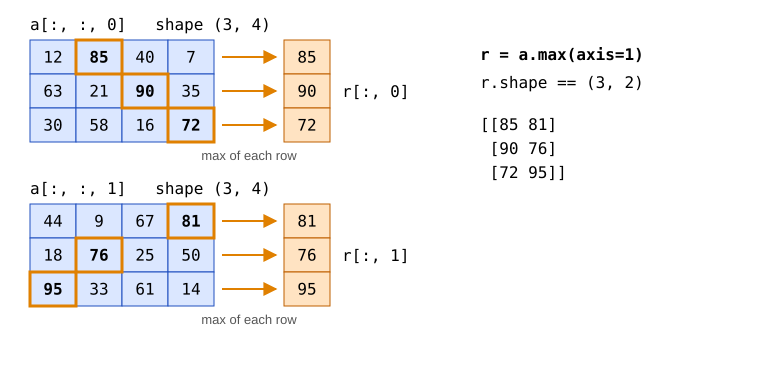
Each depth slice a[:, :, d] is a 2D plane — like a color channel img[:, :, c].
axis can be a tupleFor an image img with shape (H, W, 3):
axis=(0, 1) collapses rows and columns: all H × W values of a channel become one number.(3,), a 1D array of 3 values.img.max(axis=(0, 1)) gives the same as img.max(axis=0).max(axis=0), in one step.axis at all: every axis disappears, and the result is one number.uint8 wraps arounduint8 + int is uint8, computed modulo 256.The safe way back to an image:
np.clip — values below 0 become 0, above 255 become 255.astype — converts to another type. Without clip, out-of-range values give garbage.Exercises 1–3 in the exercises file.
cv2): written in C/C++ with a Python wrapper. Industry standard, optimized for speed. Images are NumPy arrays.sys.argvsys.argv is a list of strings: the program name, then each word typed after it.sys.argv is ['ex04.py'], and sys.argv[1] raises IndexError.python ex04.py "my photo.jpg"..py file.sys.exit(1) stops the program. A non-zero value means "something went wrong".import sys
import cv2
filename = sys.argv[1] # check len(sys.argv) first, as before
img = cv2.imread(filename)
if img is None:
print("failed to read", filename)
sys.exit(1)
print(type(img), img.dtype, img.shape)
# <class 'numpy.ndarray'> uint8 (400, 300, 3)
print(img[0, 0])
# [122 133 117] <- B, G, R !cv2.imread does not raise an error for a missing file — it returns None.cv2.imread(name, cv2.IMREAD_GRAYSCALE) → 2D array.vmin=0, vmax=255, Matplotlib stretches each gray image to its own min..max — and brightness changes become invisible.plt.savefig before plt.show(): once the window is closed, the figure is gone.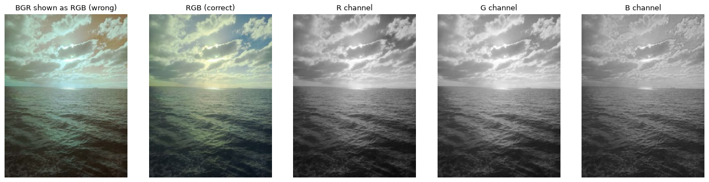
code/show_image.py
img + b.img * k.NumPy, done right:
int16? Because uint8 + 100 already wrapped around before clip could see it.code/brightness_contrast.py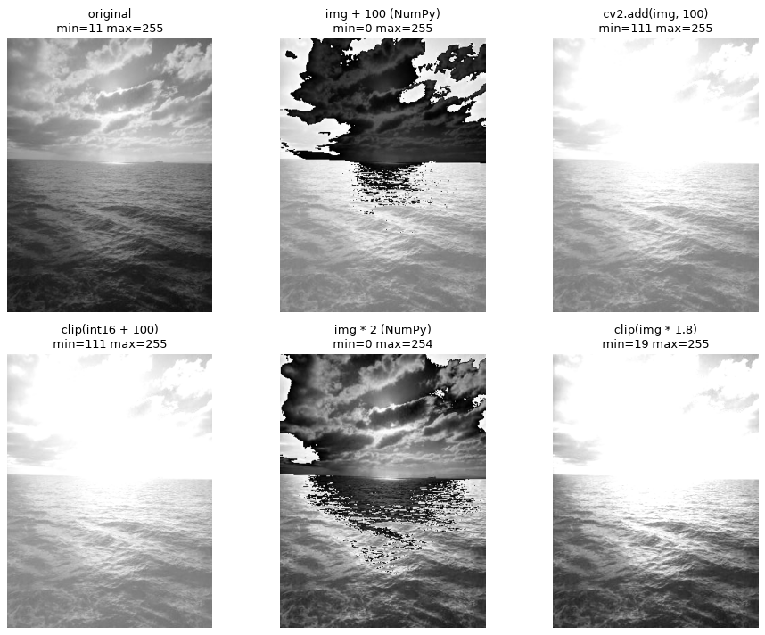
Exercises 4–6 in the exercises file.
img[10, 20] # one pixel: [B G R]
img[10, 20, 2] # one value: the R of that pixel
img[:, :, 2] # the R plane, shape (H, W)
img[100:200, 50:150] # a crop: rows 100..199, columns 50..149
img[::2, ::2] # every second row and column: half size
img[::-1, :] # rows in reverse: upside down
img[:, ::-1] # columns in reverse: mirrorstart:stop:step — like Python lists, but one per dimension.
.copy() when you need an independent array.crop = img[100:200, 50:150]
crop2 = img[100:200, 50:150].copy()
img.flags.owndata # True: img owns its memory
crop.flags.owndata # False: crop uses img's memory
crop.base is img # True: base = the array that owns the memory
crop2.base # None: a copy owns its memory
np.shares_memory(img, crop) # True
np.shares_memory(img, crop2) # Falser = img[:, :, 2] # one channel
np.shares_memory(img, r) # True: a view
r[:] = 0 # img has no red now
mask = img < 80
dark = img[mask] # the dark values, shape (n,)
np.shares_memory(img, dark) # False: a boolean mask gives a copy
dark[:] = 0 # img does not change
img[mask] = 0 # but this writes into img(400, 300, 3) * (3,) → each pixel's 3 values are multiplied by the 3 weights.img + 10 is broadcasting too: a scalar fits any shape.(400, 300) is lined up from the right: 300 against 3 → error.keepdims=True keeps the squashed axis, with size 1.The eye is most sensitive to green and least to blue:
\[Y = 0.299\,R + 0.587\,G + 0.114\,B\]
img * weights is broadcasting: (H, W, 3) * (3,) → each pixel's B, G, R times the 3 weights.axis=2 — sum over the channels; the result has one dimension less.code/loop_vs_numpy.pyExercises 7–10 in the exercises file.
The new value of a pixel depends only on its old value: out = f(img).
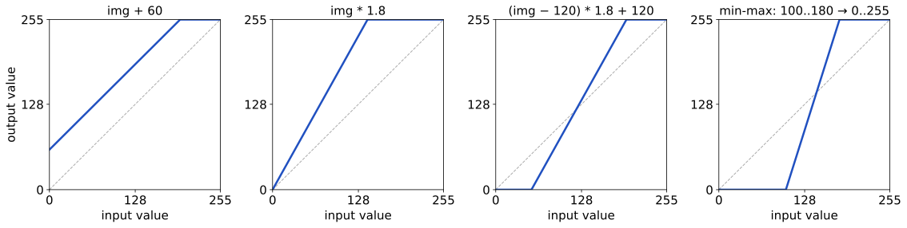
out = img (no change). Above 255 or below 0: clipped.img * 1.8 stretches around 0: the image also gets brighter (mean 123 → 221).(img - m) * 1.8 + m keeps the mean: dark gets darker, bright gets brighter.\[out = \frac{img - min}{max - min} \cdot 255\]
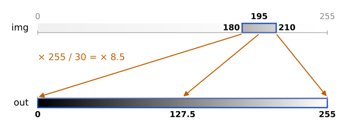
\[out = \frac{img - 180}{210 - 180} \cdot 255 = (img - 180) \cdot 8.5\]
img |
img − 180 |
× 8.5 |
out (rounded) |
|---|---|---|---|
| 180 | 0 | 0 | 0 |
| 190 | 10 | 85 | 85 |
| 195 | 15 | 127.5 | 128 |
| 200 | 20 | 170 | 170 |
| 210 | 30 | 255 | 255 |
uint8 value: np.round and cv2.normalize both give 128.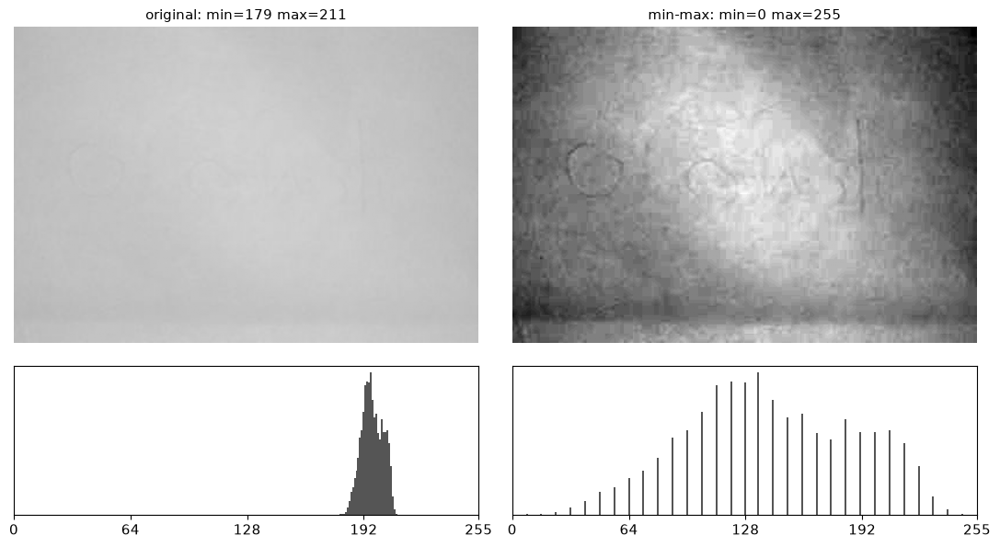
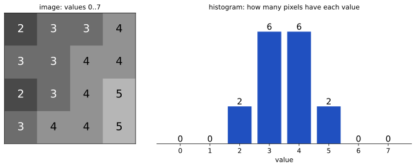
ravel() — the image as one long 1D array.int64? A count can be as large as the number of pixels: uint8 stops at 255, int16 at 32,767.np.uint8, np.int64), and converted back when written: slow.ints: no conversions.np.bincount, next).np.bincounthist, where hist[v] = the number of pixels with value v.minlength=256 — without it, the result stops at the largest value (5 above).float image raises TypeError.np.histogramfloat images) and with wider bins.ravel() needed: it flattens the image by itself.cv2.calcHist[0] — the channel; for a color image [2] is R (B, G, R!).None counts all pixels; a uint8 mask counts only where it is not 0.float32, not integers.For a color image: one histogram per channel, img[:, :, c].
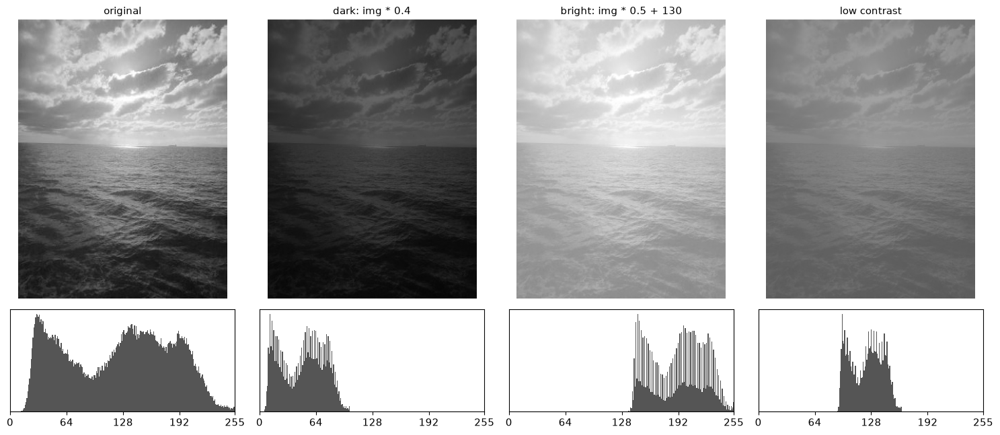
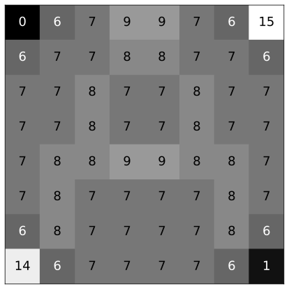
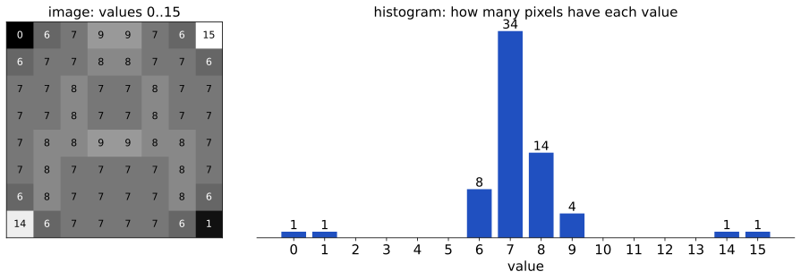
| value | 0 | 1 | 2 | 3 | 4 | 5 | 6 | 7 | 8 | 9 | 10 | 11 | 12 | 13 | 14 | 15 |
|---|---|---|---|---|---|---|---|---|---|---|---|---|---|---|---|---|
hist |
1 | 1 | 0 | 0 | 0 | 0 | 8 | 34 | 14 | 4 | 0 | 0 | 0 | 0 | 1 | 1 |
cdf |
1 | 2 | 2 | 2 | 2 | 2 | 10 | 44 | 58 | 62 | 62 | 62 | 62 | 62 | 63 | 64 |
cdf[v] = how many pixels are ≤ v.cdf[v] = cdf[v − 1] + hist[v]. In NumPy: hist.cumsum().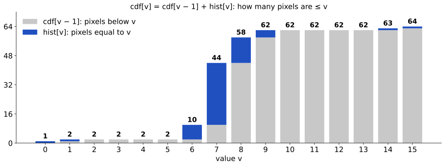
v. Blue: the pixels equal to v, added on top.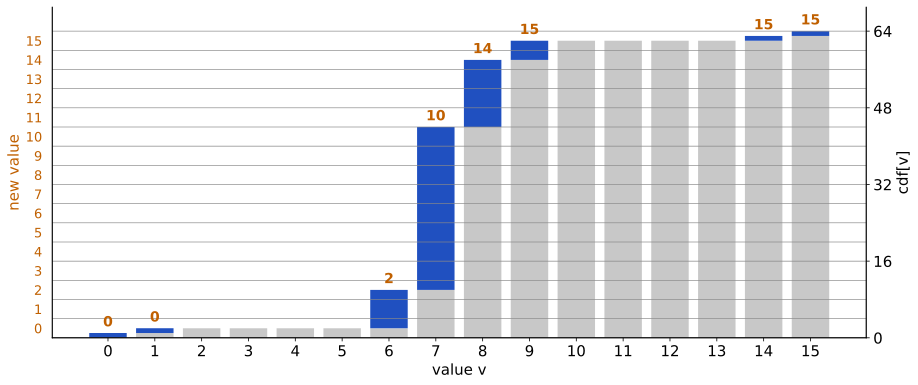
cdf = 44) → band 10.\[new = round\left(15 \cdot \frac{cdf[v] - 1}{64 - 1}\right)\]
| value | 0 | 1 | 6 | 7 | 8 | 9 | 14 | 15 |
|---|---|---|---|---|---|---|---|---|
cdf |
1 | 2 | 10 | 44 | 58 | 62 | 63 | 64 |
| exact | 0 | 0.24 | 2.14 | 10.24 | 13.57 | 14.52 | 14.76 | 15 |
| new | 0 | 0 | 2 | 10 | 14 | 15 | 15 | 15 |
cdf: the darkest value goes to 0, the brightest to 15.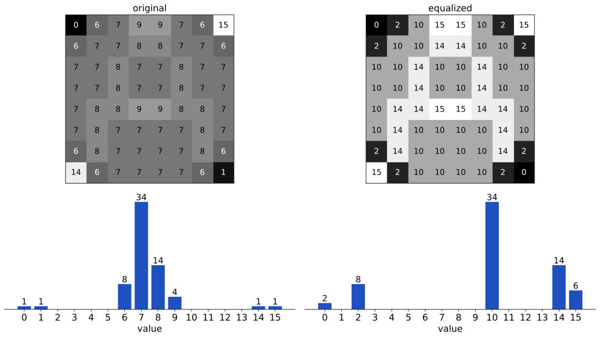
hist = np.bincount(img.ravel(), minlength=256)
cdf = hist.cumsum()
cdf_min = cdf[cdf > 0].min() # the first non-zero value
lut = np.round(255 * (cdf - cdf_min) / (cdf[-1] - cdf_min))
lut = np.clip(lut, 0, 255).astype(np.uint8)
eq = lut[img] # each pixel: lut[its value]
eq_cv = cv2.equalizeHist(img) # OpenCV: exactly the samecdf[-1] — the last value of the CDF: the number of pixels.lut[img] — an array as an index: each value in img picks its new value from lut (a lookup table).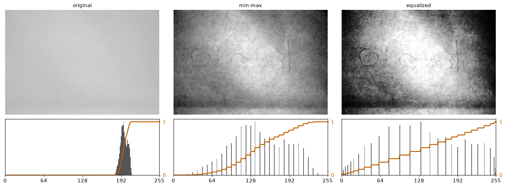
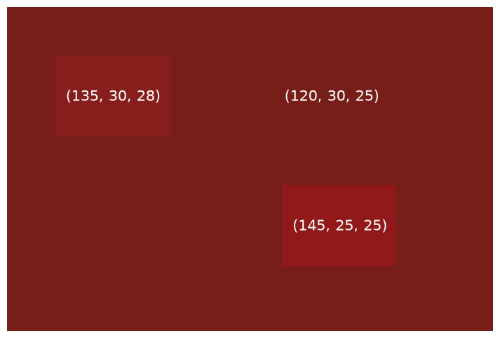
images/red_rectangles.png (PNG, so the values are exact).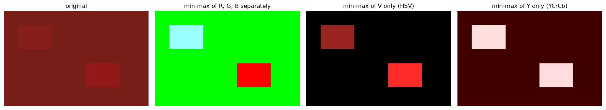
| region | original (R, G, B) | after stretching |
|---|---|---|
| background | (120, 30, 25) | (0, 255, 0) |
| top-left rectangle | (135, 30, 28) | (153, 255, 255) |
| bottom-right rectangle | (145, 25, 25) | (255, 0, 0) |
| region | original | ×2 | ×5 |
|---|---|---|---|
| background | (120, 30, 25) | (117, 30, 24) | (110, 31, 24) |
| top-left rectangle | (135, 30, 28) | (147, 30, 30) | (185, 31, 39) |
| bottom-right rectangle | (145, 25, 25) | (167, 20, 24) | (235, 6, 24) |
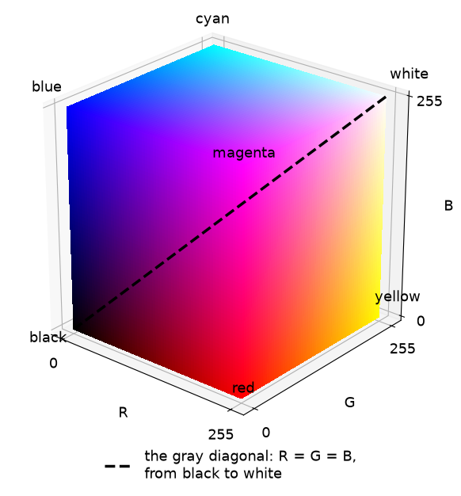
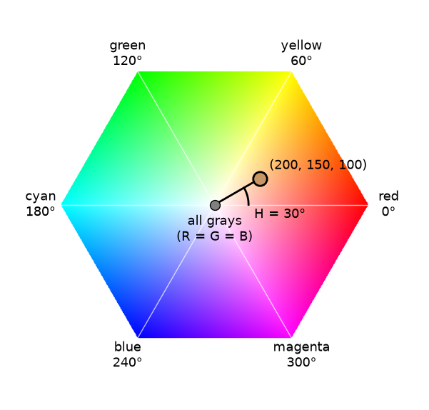
max − min: 0 for gray.(R, G, B) = (200, 150, 100): max = 200 (R), min = 100 (B).
\[V = \max(R, G, B) = 200\]
\[S = \frac{\max - \min}{\max} = \frac{100}{200} = 0.5\]
\[H = 60° \cdot \frac{G - B}{\max - \min} = 60° \cdot \frac{50}{100} = 30°\]
uint8): S → 0.5 · 255 → 127, and H → 30 / 2 = 15.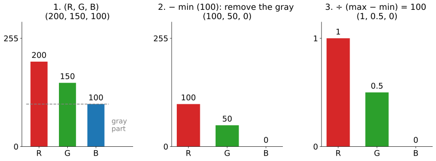
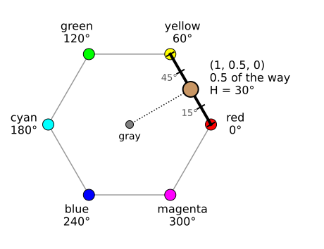
G is the max: the edges next to green, starting from 120°. B is the max: next to blue, from 240°. H moves evenly along the edge; away from its middle, the true angle differs a little (t = 0.75: H = 45°, the angle is 46°).
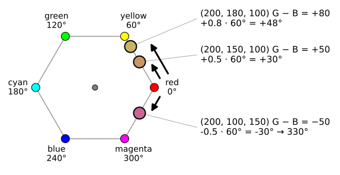
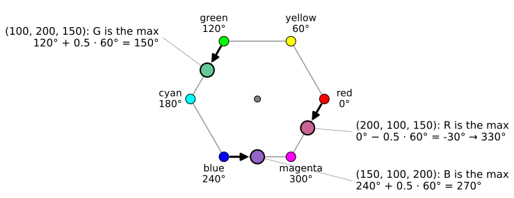
The max picks the corner. The other two channels pick the direction, and how far.
\[ H = \begin{cases} \phantom{120° + {}} 60° \cdot \dfrac{G - B}{\max - \min} & \text{if } R \text{ is the max} \\[2ex] 120° + 60° \cdot \dfrac{B - R}{\max - \min} & \text{if } G \text{ is the max} \\[2ex] 240° + 60° \cdot \dfrac{R - G}{\max - \min} & \text{if } B \text{ is the max} \\[2ex] 0 & \text{if } R = G = B \end{cases} \]
uint8) stores H / 2, so 0..179.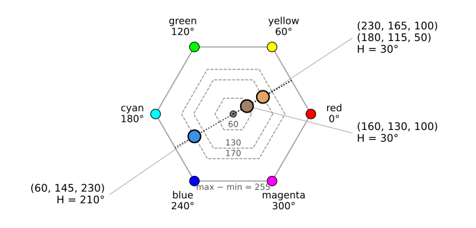
(max − min) / max. 0 = gray.max(R, G, B).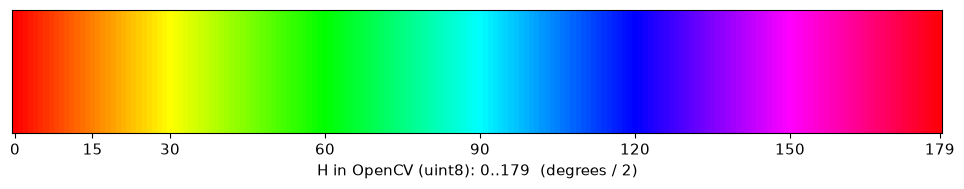
uint8, H is 0..179 (degrees / 2): 360 does not fit in a byte. S and V are 0..255.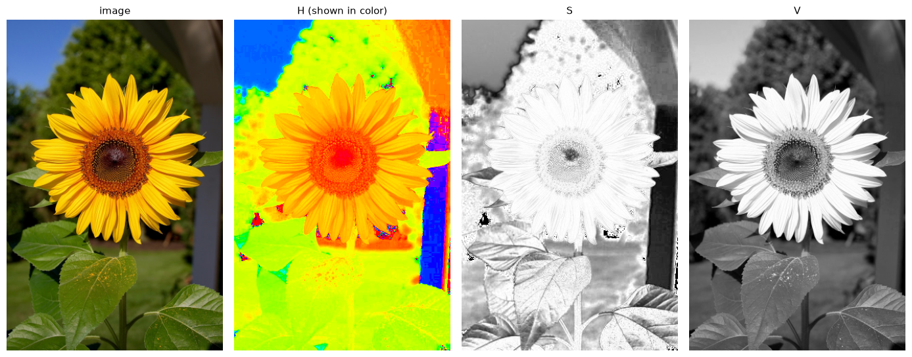
0.299 R + 0.587 G + 0.114 B.def stretch(ch): # one channel, uint8
lo, hi = np.percentile(ch, [1, 99]) # skip the extreme 1%
out = (ch.astype(np.float64) - lo) / (hi - lo) * 255
return np.clip(out, 0, 255).astype(np.uint8)
per_channel = np.dstack([stretch(img[:, :, c]) for c in range(3)])
hsv[:, :, 2] = stretch(hsv[:, :, 2]) # only Vnp.percentile(ch, [1, 99]) — the values below which 1% and 99% of the pixels are.np.dstack — stacks the 3 stretched channels back into one (H, W, 3) image.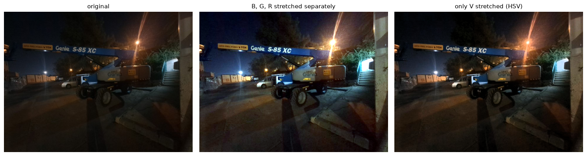
hsv = cv2.cvtColor(img, cv2.COLOR_BGR2HSV)
h, s, v = hsv[:, :, 0], hsv[:, :, 1], hsv[:, :, 2]
mask = (h >= 15) & (h <= 35) & (s >= 100) & (v >= 100) # yellow
gray = cv2.cvtColor(img, cv2.COLOR_BGR2GRAY)
out = cv2.cvtColor(gray, cv2.COLOR_GRAY2BGR) # gray, but 3 channels
out[mask] = img[mask] # color only in the mask& — "and", element by element. The parentheses are required.(h <= 10) | (h >= 170).cv2.inRange(hsv, (15, 100, 100), (35, 255, 255)) — the same mask, as 0 / 255.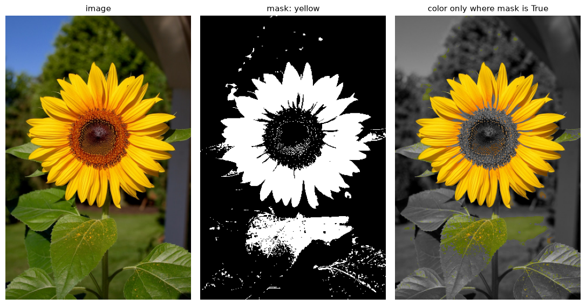
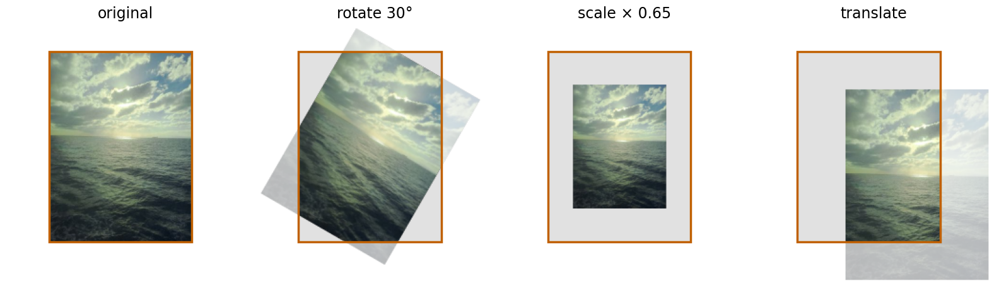
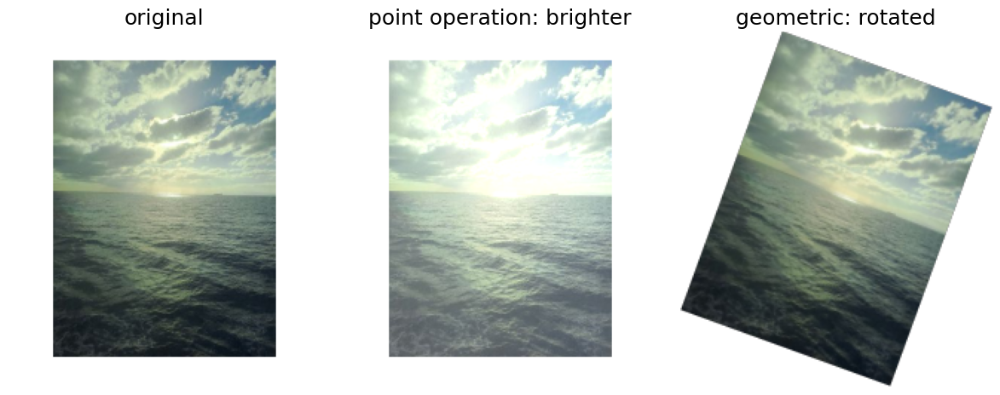
\[ \begin{bmatrix} \bbox[6px,border:2px solid transparent]{a \quad b} \\ \bbox[6px,border:2px solid transparent]{c \quad d} \end{bmatrix} \left[ \bbox[6px,border:2px solid transparent]{\begin{matrix} x \\ y \end{matrix}} \right] = \begin{bmatrix} \bbox[6px,border:2px solid transparent]{a x + b y} \\ \bbox[6px,border:2px solid transparent]{c x + d y} \end{bmatrix} \]
\[ \begin{bmatrix} \bbox[#fbe0c4,6px,border:2px solid #c06000]{a \quad b} \\ \bbox[6px,border:2px solid transparent]{c \quad d} \end{bmatrix} \left[ \bbox[#fbe0c4,6px,border:2px solid #c06000]{\begin{matrix} x \\ y \end{matrix}} \right] = \begin{bmatrix} \bbox[#fbe0c4,6px,border:2px solid #c06000]{a x + b y} \\ \bbox[6px,border:2px solid transparent]{c x + d y} \end{bmatrix} \]
\[ \begin{bmatrix} \bbox[6px,border:2px solid transparent]{a \quad b} \\ \bbox[#d6e2fb,6px,border:2px solid #2050c0]{c \quad d} \end{bmatrix} \left[ \bbox[#d6e2fb,6px,border:2px solid #2050c0]{\begin{matrix} x \\ y \end{matrix}} \right] = \begin{bmatrix} \bbox[6px,border:2px solid transparent]{a x + b y} \\ \bbox[#d6e2fb,6px,border:2px solid #2050c0]{c x + d y} \end{bmatrix} \]
\[ \begin{bmatrix} 1 & 0 \\ 0 & 1 \end{bmatrix} \begin{bmatrix} x \\ y \end{bmatrix} = \begin{bmatrix} 1 \cdot x + 0 \cdot y \\ 0 \cdot x + 1 \cdot y \end{bmatrix} = \begin{bmatrix} x \\ y \end{bmatrix} \]
Uniform scale
\[ \begin{bmatrix} s & 0 \\ 0 & s \end{bmatrix} \begin{bmatrix} x \\ y \end{bmatrix} = \begin{bmatrix} s \cdot x + 0 \cdot y \\ 0 \cdot x + s \cdot y \end{bmatrix} = \begin{bmatrix} s x \\ s y \end{bmatrix} \]
Non-uniform scale
\[ \begin{bmatrix} s_x & 0 \\ 0 & s_y \end{bmatrix} \begin{bmatrix} x \\ y \end{bmatrix} = \begin{bmatrix} s_x \cdot x + 0 \cdot y \\ 0 \cdot x + s_y \cdot y \end{bmatrix} = \begin{bmatrix} s_x x \\ s_y y \end{bmatrix} \]
\[ R(\theta) = \begin{bmatrix} \cos\theta & -\sin\theta \\ \sin\theta & \cos\theta \end{bmatrix} \]
For θ = 30°: cos 30° ≈ 0.866, sin 30° = 0.5.
\[ R(30°) = \begin{bmatrix} \cos 30° & -\sin 30° \\ \sin 30° & \cos 30° \end{bmatrix} = \begin{bmatrix} 0.866 & -0.5 \\ 0.5 & 0.866 \end{bmatrix} \]
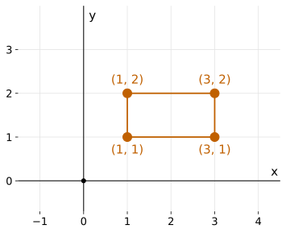
Rotate it by 30° around the origin: multiply each corner by R(30°).
\[ \begin{aligned} \begin{bmatrix} 0.866 & -0.5 \\ 0.5 & 0.866 \end{bmatrix} \begin{bmatrix} {\color{#c06000}{1}} \\ {\color{#c06000}{1}} \end{bmatrix} &= \begin{bmatrix} 0.866 \cdot 1 - 0.5 \cdot 1 \\ 0.5 \cdot 1 + 0.866 \cdot 1 \end{bmatrix} = \begin{bmatrix} {\color{#2050c0}{0.366}} \\ {\color{#2050c0}{1.366}} \end{bmatrix} \\[8pt] \begin{bmatrix} 0.866 & -0.5 \\ 0.5 & 0.866 \end{bmatrix} \begin{bmatrix} {\color{#c06000}{1}} \\ {\color{#c06000}{2}} \end{bmatrix} &= \begin{bmatrix} 0.866 \cdot 1 - 0.5 \cdot 2 \\ 0.5 \cdot 1 + 0.866 \cdot 2 \end{bmatrix} = \begin{bmatrix} {\color{#2050c0}{-0.134}} \\ {\color{#2050c0}{2.232}} \end{bmatrix} \\[8pt] \begin{bmatrix} 0.866 & -0.5 \\ 0.5 & 0.866 \end{bmatrix} \begin{bmatrix} {\color{#c06000}{3}} \\ {\color{#c06000}{1}} \end{bmatrix} &= \begin{bmatrix} 0.866 \cdot 3 - 0.5 \cdot 1 \\ 0.5 \cdot 3 + 0.866 \cdot 1 \end{bmatrix} = \begin{bmatrix} {\color{#2050c0}{2.098}} \\ {\color{#2050c0}{2.366}} \end{bmatrix} \\[8pt] \begin{bmatrix} 0.866 & -0.5 \\ 0.5 & 0.866 \end{bmatrix} \begin{bmatrix} {\color{#c06000}{3}} \\ {\color{#c06000}{2}} \end{bmatrix} &= \begin{bmatrix} 0.866 \cdot 3 - 0.5 \cdot 2 \\ 0.5 \cdot 3 + 0.866 \cdot 2 \end{bmatrix} = \begin{bmatrix} {\color{#2050c0}{1.598}} \\ {\color{#2050c0}{3.232}} \end{bmatrix} \end{aligned} \]
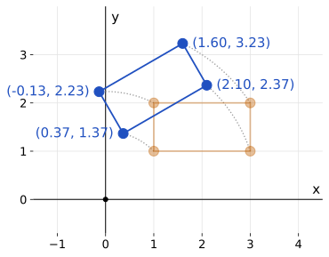
Change the point (orange) or the matrix. Faded: the rectangle, moved by the same matrix.
First rotate by 30°, then stretch x by 2:
\[ \begin{aligned} R \begin{bmatrix} {\color{#c06000}{3}} \\ {\color{#c06000}{1}} \end{bmatrix} &= \begin{bmatrix} 0.866 & -0.5 \\ 0.5 & 0.866 \end{bmatrix} \begin{bmatrix} {\color{#c06000}{3}} \\ {\color{#c06000}{1}} \end{bmatrix} = \begin{bmatrix} 2.098 \\ 2.366 \end{bmatrix} \\[12pt] S \begin{bmatrix} 2.098 \\ 2.366 \end{bmatrix} &= \begin{bmatrix} 2 & 0 \\ 0 & 1 \end{bmatrix} \begin{bmatrix} 2.098 \\ 2.366 \end{bmatrix} = \begin{bmatrix} {\color{#2050c0}{4.196}} \\ {\color{#2050c0}{2.366}} \end{bmatrix} \end{aligned} \]
Two multiplications for every point:
\[ S \, (R \, p) \]
\[ S \, (R \, p) = (S \, R) \, p \]
\[ \begin{aligned} S \, R &= \left[ \begin{matrix} \bbox[6px,border:2px solid transparent]{2 \quad 0} \\ \bbox[6px,border:2px solid transparent]{0 \quad 1} \end{matrix} \right] \left[ \bbox[6px,border:2px solid transparent]{\begin{matrix} 0.866 \\ 0.5 \end{matrix}} \; \bbox[6px,border:2px solid transparent]{\begin{matrix} -0.5 \\ 0.866 \end{matrix}} \right] \\[8pt] &= \begin{bmatrix} \bbox[6px,border:2px solid transparent]{2 \cdot 0.866 + 0 \cdot 0.5} & \bbox[6px,border:2px solid transparent]{2 \cdot (-0.5) + 0 \cdot 0.866} \\ \bbox[6px,border:2px solid transparent]{0 \cdot 0.866 + 1 \cdot 0.5} & \bbox[6px,border:2px solid transparent]{0 \cdot (-0.5) + 1 \cdot 0.866} \end{bmatrix} \\[8pt] &= \begin{bmatrix} \bbox[6px,border:2px solid transparent]{1.732} & \bbox[6px,border:2px solid transparent]{-1} \\ \bbox[6px,border:2px solid transparent]{0.5} & \bbox[6px,border:2px solid transparent]{0.866} \end{bmatrix} \end{aligned} \]
\[ \begin{aligned} S \, R &= \left[ \begin{matrix} \bbox[#fbe0c4,6px,border:2px solid #c06000]{2 \quad 0} \\ \bbox[6px,border:2px solid transparent]{0 \quad 1} \end{matrix} \right] \left[ \bbox[#fbe0c4,6px,border:2px solid #c06000]{\begin{matrix} 0.866 \\ 0.5 \end{matrix}} \; \bbox[6px,border:2px solid transparent]{\begin{matrix} -0.5 \\ 0.866 \end{matrix}} \right] \\[8pt] &= \begin{bmatrix} \bbox[#fbe0c4,6px,border:2px solid #c06000]{2 \cdot 0.866 + 0 \cdot 0.5} & \bbox[6px,border:2px solid transparent]{2 \cdot (-0.5) + 0 \cdot 0.866} \\ \bbox[6px,border:2px solid transparent]{0 \cdot 0.866 + 1 \cdot 0.5} & \bbox[6px,border:2px solid transparent]{0 \cdot (-0.5) + 1 \cdot 0.866} \end{bmatrix} \\[8pt] &= \begin{bmatrix} \bbox[#fbe0c4,6px,border:2px solid #c06000]{1.732} & \bbox[6px,border:2px solid transparent]{-1} \\ \bbox[6px,border:2px solid transparent]{0.5} & \bbox[6px,border:2px solid transparent]{0.866} \end{bmatrix} \end{aligned} \]
\[ \begin{aligned} S \, R &= \left[ \begin{matrix} \bbox[#fbe0c4,6px,border:2px solid #c06000]{2 \quad 0} \\ \bbox[6px,border:2px solid transparent]{0 \quad 1} \end{matrix} \right] \left[ \bbox[6px,border:2px solid transparent]{\begin{matrix} 0.866 \\ 0.5 \end{matrix}} \; \bbox[#fbe0c4,6px,border:2px solid #c06000]{\begin{matrix} -0.5 \\ 0.866 \end{matrix}} \right] \\[8pt] &= \begin{bmatrix} \bbox[6px,border:2px solid transparent]{2 \cdot 0.866 + 0 \cdot 0.5} & \bbox[#fbe0c4,6px,border:2px solid #c06000]{2 \cdot (-0.5) + 0 \cdot 0.866} \\ \bbox[6px,border:2px solid transparent]{0 \cdot 0.866 + 1 \cdot 0.5} & \bbox[6px,border:2px solid transparent]{0 \cdot (-0.5) + 1 \cdot 0.866} \end{bmatrix} \\[8pt] &= \begin{bmatrix} \bbox[6px,border:2px solid transparent]{1.732} & \bbox[#fbe0c4,6px,border:2px solid #c06000]{-1} \\ \bbox[6px,border:2px solid transparent]{0.5} & \bbox[6px,border:2px solid transparent]{0.866} \end{bmatrix} \end{aligned} \]
\[ \begin{aligned} S \, R &= \left[ \begin{matrix} \bbox[6px,border:2px solid transparent]{2 \quad 0} \\ \bbox[#d6e2fb,6px,border:2px solid #2050c0]{0 \quad 1} \end{matrix} \right] \left[ \bbox[#d6e2fb,6px,border:2px solid #2050c0]{\begin{matrix} 0.866 \\ 0.5 \end{matrix}} \; \bbox[6px,border:2px solid transparent]{\begin{matrix} -0.5 \\ 0.866 \end{matrix}} \right] \\[8pt] &= \begin{bmatrix} \bbox[6px,border:2px solid transparent]{2 \cdot 0.866 + 0 \cdot 0.5} & \bbox[6px,border:2px solid transparent]{2 \cdot (-0.5) + 0 \cdot 0.866} \\ \bbox[#d6e2fb,6px,border:2px solid #2050c0]{0 \cdot 0.866 + 1 \cdot 0.5} & \bbox[6px,border:2px solid transparent]{0 \cdot (-0.5) + 1 \cdot 0.866} \end{bmatrix} \\[8pt] &= \begin{bmatrix} \bbox[6px,border:2px solid transparent]{1.732} & \bbox[6px,border:2px solid transparent]{-1} \\ \bbox[#d6e2fb,6px,border:2px solid #2050c0]{0.5} & \bbox[6px,border:2px solid transparent]{0.866} \end{bmatrix} \end{aligned} \]
\[ \begin{aligned} S \, R &= \left[ \begin{matrix} \bbox[6px,border:2px solid transparent]{2 \quad 0} \\ \bbox[#d6e2fb,6px,border:2px solid #2050c0]{0 \quad 1} \end{matrix} \right] \left[ \bbox[6px,border:2px solid transparent]{\begin{matrix} 0.866 \\ 0.5 \end{matrix}} \; \bbox[#d6e2fb,6px,border:2px solid #2050c0]{\begin{matrix} -0.5 \\ 0.866 \end{matrix}} \right] \\[8pt] &= \begin{bmatrix} \bbox[6px,border:2px solid transparent]{2 \cdot 0.866 + 0 \cdot 0.5} & \bbox[6px,border:2px solid transparent]{2 \cdot (-0.5) + 0 \cdot 0.866} \\ \bbox[6px,border:2px solid transparent]{0 \cdot 0.866 + 1 \cdot 0.5} & \bbox[#d6e2fb,6px,border:2px solid #2050c0]{0 \cdot (-0.5) + 1 \cdot 0.866} \end{bmatrix} \\[8pt] &= \begin{bmatrix} \bbox[6px,border:2px solid transparent]{1.732} & \bbox[6px,border:2px solid transparent]{-1} \\ \bbox[6px,border:2px solid transparent]{0.5} & \bbox[#d6e2fb,6px,border:2px solid #2050c0]{0.866} \end{bmatrix} \end{aligned} \]
\[ (S \, R) \begin{bmatrix} {\color{#c06000}{3}} \\ {\color{#c06000}{1}} \end{bmatrix} = \begin{bmatrix} 1.732 & -1 \\ 0.5 & 0.866 \end{bmatrix} \begin{bmatrix} {\color{#c06000}{3}} \\ {\color{#c06000}{1}} \end{bmatrix} = \begin{bmatrix} 1.732 \cdot 3 - 1 \cdot 1 \\ 0.5 \cdot 3 + 0.866 \cdot 1 \end{bmatrix} = \begin{bmatrix} {\color{#2050c0}{4.196}} \\ {\color{#2050c0}{2.366}} \end{bmatrix} \]
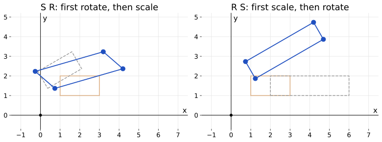
\[ \begin{aligned} S \, R &= \begin{bmatrix} 2 & 0 \\ 0 & 1 \end{bmatrix} \begin{bmatrix} 0.866 & -0.5 \\ 0.5 & 0.866 \end{bmatrix} = \begin{bmatrix} 1.732 & -1 \\ 0.5 & 0.866 \end{bmatrix} \\[12pt] R \, S &= \begin{bmatrix} 0.866 & -0.5 \\ 0.5 & 0.866 \end{bmatrix} \begin{bmatrix} 2 & 0 \\ 0 & 1 \end{bmatrix} = \begin{bmatrix} 1.732 & -0.5 \\ 1 & 0.866 \end{bmatrix} \end{aligned} \]
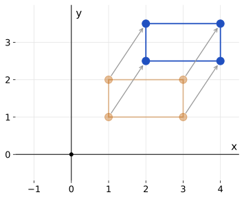
\[ \begin{bmatrix} x \\ y \end{bmatrix} \to \begin{bmatrix} x + t_x \\ y + t_y \end{bmatrix} \]
\[ \begin{bmatrix} a & b \\ c & d \end{bmatrix} \begin{bmatrix} 0 \\ 0 \end{bmatrix} = \begin{bmatrix} a \cdot 0 + b \cdot 0 \\ c \cdot 0 + d \cdot 0 \end{bmatrix} = \begin{bmatrix} 0 \\ 0 \end{bmatrix} \]
Add a third coordinate, always 1:
\[ \begin{bmatrix} x \\ y \end{bmatrix} \to \begin{bmatrix} x \\ y \\ 1 \end{bmatrix} \]
\[ \left[ \begin{matrix} \bbox[6px,border:2px solid transparent]{1 \quad 0 \quad t_x} \\ \bbox[6px,border:2px solid transparent]{0 \quad 1 \quad t_y} \\ \bbox[6px,border:2px solid transparent]{0 \quad 0 \quad 1} \end{matrix} \right] \left[ \bbox[6px,border:2px solid transparent]{\begin{matrix} x \\ y \\ 1 \end{matrix}} \right] = \left[ \begin{matrix} \bbox[6px,border:2px solid transparent]{1 \cdot x + 0 \cdot y + t_x \cdot 1} \\ \bbox[6px,border:2px solid transparent]{0 \cdot x + 1 \cdot y + t_y \cdot 1} \\ \bbox[6px,border:2px solid transparent]{0 \cdot x + 0 \cdot y + 1 \cdot 1} \end{matrix} \right] = \left[ \begin{matrix} \bbox[6px,border:2px solid transparent]{x + t_x} \\ \bbox[6px,border:2px solid transparent]{y + t_y} \\ \bbox[6px,border:2px solid transparent]{1} \end{matrix} \right] \]
\[ \left[ \begin{matrix} \bbox[#fbe0c4,6px,border:2px solid #c06000]{1 \quad 0 \quad t_x} \\ \bbox[6px,border:2px solid transparent]{0 \quad 1 \quad t_y} \\ \bbox[6px,border:2px solid transparent]{0 \quad 0 \quad 1} \end{matrix} \right] \left[ \bbox[#fbe0c4,6px,border:2px solid #c06000]{\begin{matrix} x \\ y \\ 1 \end{matrix}} \right] = \left[ \begin{matrix} \bbox[#fbe0c4,6px,border:2px solid #c06000]{1 \cdot x + 0 \cdot y + t_x \cdot 1} \\ \bbox[6px,border:2px solid transparent]{0 \cdot x + 1 \cdot y + t_y \cdot 1} \\ \bbox[6px,border:2px solid transparent]{0 \cdot x + 0 \cdot y + 1 \cdot 1} \end{matrix} \right] = \left[ \begin{matrix} \bbox[#fbe0c4,6px,border:2px solid #c06000]{x + t_x} \\ \bbox[6px,border:2px solid transparent]{y + t_y} \\ \bbox[6px,border:2px solid transparent]{1} \end{matrix} \right] \]
\[ \left[ \begin{matrix} \bbox[6px,border:2px solid transparent]{1 \quad 0 \quad t_x} \\ \bbox[#d6e2fb,6px,border:2px solid #2050c0]{0 \quad 1 \quad t_y} \\ \bbox[6px,border:2px solid transparent]{0 \quad 0 \quad 1} \end{matrix} \right] \left[ \bbox[#d6e2fb,6px,border:2px solid #2050c0]{\begin{matrix} x \\ y \\ 1 \end{matrix}} \right] = \left[ \begin{matrix} \bbox[6px,border:2px solid transparent]{1 \cdot x + 0 \cdot y + t_x \cdot 1} \\ \bbox[#d6e2fb,6px,border:2px solid #2050c0]{0 \cdot x + 1 \cdot y + t_y \cdot 1} \\ \bbox[6px,border:2px solid transparent]{0 \cdot x + 0 \cdot y + 1 \cdot 1} \end{matrix} \right] = \left[ \begin{matrix} \bbox[6px,border:2px solid transparent]{x + t_x} \\ \bbox[#d6e2fb,6px,border:2px solid #2050c0]{y + t_y} \\ \bbox[6px,border:2px solid transparent]{1} \end{matrix} \right] \]
\[ \left[ \begin{matrix} \bbox[6px,border:2px solid transparent]{1 \quad 0 \quad t_x} \\ \bbox[6px,border:2px solid transparent]{0 \quad 1 \quad t_y} \\ \bbox[#d9efd9,6px,border:2px solid #2a7a3a]{0 \quad 0 \quad 1} \end{matrix} \right] \left[ \bbox[#d9efd9,6px,border:2px solid #2a7a3a]{\begin{matrix} x \\ y \\ 1 \end{matrix}} \right] = \left[ \begin{matrix} \bbox[6px,border:2px solid transparent]{1 \cdot x + 0 \cdot y + t_x \cdot 1} \\ \bbox[6px,border:2px solid transparent]{0 \cdot x + 1 \cdot y + t_y \cdot 1} \\ \bbox[#d9efd9,6px,border:2px solid #2a7a3a]{0 \cdot x + 0 \cdot y + 1 \cdot 1} \end{matrix} \right] = \left[ \begin{matrix} \bbox[6px,border:2px solid transparent]{x + t_x} \\ \bbox[6px,border:2px solid transparent]{y + t_y} \\ \bbox[#d9efd9,6px,border:2px solid #2a7a3a]{1} \end{matrix} \right] \]
Rotation and scale get one more row and column: zeros, and 1 at the bottom.
\[ \begin{bmatrix} s_x & 0 & {\color{#c06000}{0}} \\ 0 & s_y & {\color{#c06000}{0}} \\ {\color{#c06000}{0}} & {\color{#c06000}{0}} & {\color{#c06000}{1}} \end{bmatrix}\begin{bmatrix} x \\ y \\ 1 \end{bmatrix} = \begin{bmatrix} s_x x \\ s_y y \\ 1 \end{bmatrix} \]
\[ \begin{bmatrix} \cos\theta & -\sin\theta & {\color{#c06000}{0}} \\ \sin\theta & \cos\theta & {\color{#c06000}{0}} \\ {\color{#c06000}{0}} & {\color{#c06000}{0}} & {\color{#c06000}{1}} \end{bmatrix}\begin{bmatrix} x \\ y \\ 1 \end{bmatrix} = \begin{bmatrix} x \cos\theta - y \sin\theta \\ x \sin\theta + y \cos\theta \\ 1 \end{bmatrix} \]
\[ T = \begin{bmatrix} 1 & 0 & t_x \\ 0 & 1 & t_y \\ 0 & 0 & 1 \end{bmatrix}\qquad R = \begin{bmatrix} \cos\theta & -\sin\theta & 0 \\ \sin\theta & \cos\theta & 0 \\ 0 & 0 & 1 \end{bmatrix}\qquad S = \begin{bmatrix} s_x & 0 & 0 \\ 0 & s_y & 0 \\ 0 & 0 & 1 \end{bmatrix} \]
Combine transformations by multiplying matrices, as before:
\(M = T \, R \, S\) (first \(S\), then \(R\), then \(T\)).
With scale and rotation expanded to 3×3, they can be multiplied with translation: any set of transformations combines into one matrix.
With translation, we can rotate around the rectangle's center \(c = (2, 1.5)\).
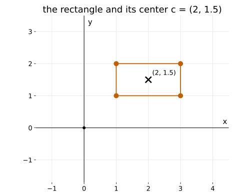
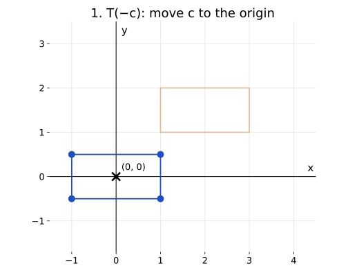
\[ \begin{aligned} M &= T(c) \, R(30°) \, T(-c) \\[8pt] &= \begin{bmatrix} 1 & 0 & 2 \\ 0 & 1 & 1.5 \\ 0 & 0 & 1 \end{bmatrix} \begin{bmatrix} 0.866 & -0.5 & 0 \\ 0.5 & 0.866 & 0 \\ 0 & 0 & 1 \end{bmatrix} \begin{bmatrix} 1 & 0 & -2 \\ 0 & 1 & -1.5 \\ 0 & 0 & 1 \end{bmatrix} \\[8pt] &= \begin{bmatrix} 0.866 & -0.5 & 1.018 \\ 0.5 & 0.866 & -0.799 \\ 0 & 0 & 1 \end{bmatrix} \end{aligned} \]
@ is matrix multiplication; * is not.Instead of multiplying each \((x, y)\) on its own: put them as the columns of one matrix \(P\), and multiply once.
\[ \bbox[6px,border:2px solid transparent]{R \begin{bmatrix} {\color{#c06000}{1}} \\ {\color{#c06000}{1}} \end{bmatrix} = \begin{bmatrix} {\color{#2050c0}{0.366}} \\ {\color{#2050c0}{1.366}} \end{bmatrix}} \quad \bbox[6px,border:2px solid transparent]{R \begin{bmatrix} {\color{#c06000}{1}} \\ {\color{#c06000}{2}} \end{bmatrix} = \begin{bmatrix} {\color{#2050c0}{-0.134}} \\ {\color{#2050c0}{2.232}} \end{bmatrix}} \quad \bbox[6px,border:2px solid transparent]{R \begin{bmatrix} {\color{#c06000}{3}} \\ {\color{#c06000}{1}} \end{bmatrix} = \begin{bmatrix} {\color{#2050c0}{2.098}} \\ {\color{#2050c0}{2.366}} \end{bmatrix}} \quad \bbox[6px,border:2px solid transparent]{R \begin{bmatrix} {\color{#c06000}{3}} \\ {\color{#c06000}{2}} \end{bmatrix} = \begin{bmatrix} {\color{#2050c0}{1.598}} \\ {\color{#2050c0}{3.232}} \end{bmatrix}} \]
\[ P = \left[ \bbox[6px,border:2px solid transparent]{\begin{matrix} {\color{#c06000}{1}} \\ {\color{#c06000}{1}} \end{matrix}} \; \bbox[6px,border:2px solid transparent]{\begin{matrix} {\color{#c06000}{1}} \\ {\color{#c06000}{2}} \end{matrix}} \; \bbox[6px,border:2px solid transparent]{\begin{matrix} {\color{#c06000}{3}} \\ {\color{#c06000}{1}} \end{matrix}} \; \bbox[6px,border:2px solid transparent]{\begin{matrix} {\color{#c06000}{3}} \\ {\color{#c06000}{2}} \end{matrix}} \right] \]
\[ R \, P = \begin{bmatrix} 0.866 & -0.5 \\ 0.5 & 0.866 \end{bmatrix} \left[ \bbox[6px,border:2px solid transparent]{\begin{matrix} {\color{#c06000}{1}} \\ {\color{#c06000}{1}} \end{matrix}} \; \bbox[6px,border:2px solid transparent]{\begin{matrix} {\color{#c06000}{1}} \\ {\color{#c06000}{2}} \end{matrix}} \; \bbox[6px,border:2px solid transparent]{\begin{matrix} {\color{#c06000}{3}} \\ {\color{#c06000}{1}} \end{matrix}} \; \bbox[6px,border:2px solid transparent]{\begin{matrix} {\color{#c06000}{3}} \\ {\color{#c06000}{2}} \end{matrix}} \right] = \left[ \bbox[6px,border:2px solid transparent]{\begin{matrix} {\color{#2050c0}{0.366}} \\ {\color{#2050c0}{1.366}} \end{matrix}} \; \bbox[6px,border:2px solid transparent]{\begin{matrix} {\color{#2050c0}{-0.134}} \\ {\color{#2050c0}{2.232}} \end{matrix}} \; \bbox[6px,border:2px solid transparent]{\begin{matrix} {\color{#2050c0}{2.098}} \\ {\color{#2050c0}{2.366}} \end{matrix}} \; \bbox[6px,border:2px solid transparent]{\begin{matrix} {\color{#2050c0}{1.598}} \\ {\color{#2050c0}{3.232}} \end{matrix}} \right] \]
\[ \bbox[#fbe0c4,6px,border:2px solid #c06000]{R \begin{bmatrix} {\color{#c06000}{1}} \\ {\color{#c06000}{1}} \end{bmatrix} = \begin{bmatrix} {\color{#2050c0}{0.366}} \\ {\color{#2050c0}{1.366}} \end{bmatrix}} \quad \bbox[6px,border:2px solid transparent]{R \begin{bmatrix} {\color{#c06000}{1}} \\ {\color{#c06000}{2}} \end{bmatrix} = \begin{bmatrix} {\color{#2050c0}{-0.134}} \\ {\color{#2050c0}{2.232}} \end{bmatrix}} \quad \bbox[6px,border:2px solid transparent]{R \begin{bmatrix} {\color{#c06000}{3}} \\ {\color{#c06000}{1}} \end{bmatrix} = \begin{bmatrix} {\color{#2050c0}{2.098}} \\ {\color{#2050c0}{2.366}} \end{bmatrix}} \quad \bbox[6px,border:2px solid transparent]{R \begin{bmatrix} {\color{#c06000}{3}} \\ {\color{#c06000}{2}} \end{bmatrix} = \begin{bmatrix} {\color{#2050c0}{1.598}} \\ {\color{#2050c0}{3.232}} \end{bmatrix}} \]
\[ P = \left[ \bbox[#fbe0c4,6px,border:2px solid #c06000]{\begin{matrix} {\color{#c06000}{1}} \\ {\color{#c06000}{1}} \end{matrix}} \; \bbox[6px,border:2px solid transparent]{\begin{matrix} {\color{#c06000}{1}} \\ {\color{#c06000}{2}} \end{matrix}} \; \bbox[6px,border:2px solid transparent]{\begin{matrix} {\color{#c06000}{3}} \\ {\color{#c06000}{1}} \end{matrix}} \; \bbox[6px,border:2px solid transparent]{\begin{matrix} {\color{#c06000}{3}} \\ {\color{#c06000}{2}} \end{matrix}} \right] \]
\[ R \, P = \begin{bmatrix} 0.866 & -0.5 \\ 0.5 & 0.866 \end{bmatrix} \left[ \bbox[#fbe0c4,6px,border:2px solid #c06000]{\begin{matrix} {\color{#c06000}{1}} \\ {\color{#c06000}{1}} \end{matrix}} \; \bbox[6px,border:2px solid transparent]{\begin{matrix} {\color{#c06000}{1}} \\ {\color{#c06000}{2}} \end{matrix}} \; \bbox[6px,border:2px solid transparent]{\begin{matrix} {\color{#c06000}{3}} \\ {\color{#c06000}{1}} \end{matrix}} \; \bbox[6px,border:2px solid transparent]{\begin{matrix} {\color{#c06000}{3}} \\ {\color{#c06000}{2}} \end{matrix}} \right] = \left[ \bbox[#fbe0c4,6px,border:2px solid #c06000]{\begin{matrix} {\color{#2050c0}{0.366}} \\ {\color{#2050c0}{1.366}} \end{matrix}} \; \bbox[6px,border:2px solid transparent]{\begin{matrix} {\color{#2050c0}{-0.134}} \\ {\color{#2050c0}{2.232}} \end{matrix}} \; \bbox[6px,border:2px solid transparent]{\begin{matrix} {\color{#2050c0}{2.098}} \\ {\color{#2050c0}{2.366}} \end{matrix}} \; \bbox[6px,border:2px solid transparent]{\begin{matrix} {\color{#2050c0}{1.598}} \\ {\color{#2050c0}{3.232}} \end{matrix}} \right] \]
\[ \bbox[6px,border:2px solid transparent]{R \begin{bmatrix} {\color{#c06000}{1}} \\ {\color{#c06000}{1}} \end{bmatrix} = \begin{bmatrix} {\color{#2050c0}{0.366}} \\ {\color{#2050c0}{1.366}} \end{bmatrix}} \quad \bbox[#fbe0c4,6px,border:2px solid #c06000]{R \begin{bmatrix} {\color{#c06000}{1}} \\ {\color{#c06000}{2}} \end{bmatrix} = \begin{bmatrix} {\color{#2050c0}{-0.134}} \\ {\color{#2050c0}{2.232}} \end{bmatrix}} \quad \bbox[6px,border:2px solid transparent]{R \begin{bmatrix} {\color{#c06000}{3}} \\ {\color{#c06000}{1}} \end{bmatrix} = \begin{bmatrix} {\color{#2050c0}{2.098}} \\ {\color{#2050c0}{2.366}} \end{bmatrix}} \quad \bbox[6px,border:2px solid transparent]{R \begin{bmatrix} {\color{#c06000}{3}} \\ {\color{#c06000}{2}} \end{bmatrix} = \begin{bmatrix} {\color{#2050c0}{1.598}} \\ {\color{#2050c0}{3.232}} \end{bmatrix}} \]
\[ P = \left[ \bbox[6px,border:2px solid transparent]{\begin{matrix} {\color{#c06000}{1}} \\ {\color{#c06000}{1}} \end{matrix}} \; \bbox[#fbe0c4,6px,border:2px solid #c06000]{\begin{matrix} {\color{#c06000}{1}} \\ {\color{#c06000}{2}} \end{matrix}} \; \bbox[6px,border:2px solid transparent]{\begin{matrix} {\color{#c06000}{3}} \\ {\color{#c06000}{1}} \end{matrix}} \; \bbox[6px,border:2px solid transparent]{\begin{matrix} {\color{#c06000}{3}} \\ {\color{#c06000}{2}} \end{matrix}} \right] \]
\[ R \, P = \begin{bmatrix} 0.866 & -0.5 \\ 0.5 & 0.866 \end{bmatrix} \left[ \bbox[6px,border:2px solid transparent]{\begin{matrix} {\color{#c06000}{1}} \\ {\color{#c06000}{1}} \end{matrix}} \; \bbox[#fbe0c4,6px,border:2px solid #c06000]{\begin{matrix} {\color{#c06000}{1}} \\ {\color{#c06000}{2}} \end{matrix}} \; \bbox[6px,border:2px solid transparent]{\begin{matrix} {\color{#c06000}{3}} \\ {\color{#c06000}{1}} \end{matrix}} \; \bbox[6px,border:2px solid transparent]{\begin{matrix} {\color{#c06000}{3}} \\ {\color{#c06000}{2}} \end{matrix}} \right] = \left[ \bbox[6px,border:2px solid transparent]{\begin{matrix} {\color{#2050c0}{0.366}} \\ {\color{#2050c0}{1.366}} \end{matrix}} \; \bbox[#fbe0c4,6px,border:2px solid #c06000]{\begin{matrix} {\color{#2050c0}{-0.134}} \\ {\color{#2050c0}{2.232}} \end{matrix}} \; \bbox[6px,border:2px solid transparent]{\begin{matrix} {\color{#2050c0}{2.098}} \\ {\color{#2050c0}{2.366}} \end{matrix}} \; \bbox[6px,border:2px solid transparent]{\begin{matrix} {\color{#2050c0}{1.598}} \\ {\color{#2050c0}{3.232}} \end{matrix}} \right] \]
\[ \bbox[6px,border:2px solid transparent]{R \begin{bmatrix} {\color{#c06000}{1}} \\ {\color{#c06000}{1}} \end{bmatrix} = \begin{bmatrix} {\color{#2050c0}{0.366}} \\ {\color{#2050c0}{1.366}} \end{bmatrix}} \quad \bbox[6px,border:2px solid transparent]{R \begin{bmatrix} {\color{#c06000}{1}} \\ {\color{#c06000}{2}} \end{bmatrix} = \begin{bmatrix} {\color{#2050c0}{-0.134}} \\ {\color{#2050c0}{2.232}} \end{bmatrix}} \quad \bbox[#fbe0c4,6px,border:2px solid #c06000]{R \begin{bmatrix} {\color{#c06000}{3}} \\ {\color{#c06000}{1}} \end{bmatrix} = \begin{bmatrix} {\color{#2050c0}{2.098}} \\ {\color{#2050c0}{2.366}} \end{bmatrix}} \quad \bbox[6px,border:2px solid transparent]{R \begin{bmatrix} {\color{#c06000}{3}} \\ {\color{#c06000}{2}} \end{bmatrix} = \begin{bmatrix} {\color{#2050c0}{1.598}} \\ {\color{#2050c0}{3.232}} \end{bmatrix}} \]
\[ P = \left[ \bbox[6px,border:2px solid transparent]{\begin{matrix} {\color{#c06000}{1}} \\ {\color{#c06000}{1}} \end{matrix}} \; \bbox[6px,border:2px solid transparent]{\begin{matrix} {\color{#c06000}{1}} \\ {\color{#c06000}{2}} \end{matrix}} \; \bbox[#fbe0c4,6px,border:2px solid #c06000]{\begin{matrix} {\color{#c06000}{3}} \\ {\color{#c06000}{1}} \end{matrix}} \; \bbox[6px,border:2px solid transparent]{\begin{matrix} {\color{#c06000}{3}} \\ {\color{#c06000}{2}} \end{matrix}} \right] \]
\[ R \, P = \begin{bmatrix} 0.866 & -0.5 \\ 0.5 & 0.866 \end{bmatrix} \left[ \bbox[6px,border:2px solid transparent]{\begin{matrix} {\color{#c06000}{1}} \\ {\color{#c06000}{1}} \end{matrix}} \; \bbox[6px,border:2px solid transparent]{\begin{matrix} {\color{#c06000}{1}} \\ {\color{#c06000}{2}} \end{matrix}} \; \bbox[#fbe0c4,6px,border:2px solid #c06000]{\begin{matrix} {\color{#c06000}{3}} \\ {\color{#c06000}{1}} \end{matrix}} \; \bbox[6px,border:2px solid transparent]{\begin{matrix} {\color{#c06000}{3}} \\ {\color{#c06000}{2}} \end{matrix}} \right] = \left[ \bbox[6px,border:2px solid transparent]{\begin{matrix} {\color{#2050c0}{0.366}} \\ {\color{#2050c0}{1.366}} \end{matrix}} \; \bbox[6px,border:2px solid transparent]{\begin{matrix} {\color{#2050c0}{-0.134}} \\ {\color{#2050c0}{2.232}} \end{matrix}} \; \bbox[#fbe0c4,6px,border:2px solid #c06000]{\begin{matrix} {\color{#2050c0}{2.098}} \\ {\color{#2050c0}{2.366}} \end{matrix}} \; \bbox[6px,border:2px solid transparent]{\begin{matrix} {\color{#2050c0}{1.598}} \\ {\color{#2050c0}{3.232}} \end{matrix}} \right] \]
\[ \bbox[6px,border:2px solid transparent]{R \begin{bmatrix} {\color{#c06000}{1}} \\ {\color{#c06000}{1}} \end{bmatrix} = \begin{bmatrix} {\color{#2050c0}{0.366}} \\ {\color{#2050c0}{1.366}} \end{bmatrix}} \quad \bbox[6px,border:2px solid transparent]{R \begin{bmatrix} {\color{#c06000}{1}} \\ {\color{#c06000}{2}} \end{bmatrix} = \begin{bmatrix} {\color{#2050c0}{-0.134}} \\ {\color{#2050c0}{2.232}} \end{bmatrix}} \quad \bbox[6px,border:2px solid transparent]{R \begin{bmatrix} {\color{#c06000}{3}} \\ {\color{#c06000}{1}} \end{bmatrix} = \begin{bmatrix} {\color{#2050c0}{2.098}} \\ {\color{#2050c0}{2.366}} \end{bmatrix}} \quad \bbox[#fbe0c4,6px,border:2px solid #c06000]{R \begin{bmatrix} {\color{#c06000}{3}} \\ {\color{#c06000}{2}} \end{bmatrix} = \begin{bmatrix} {\color{#2050c0}{1.598}} \\ {\color{#2050c0}{3.232}} \end{bmatrix}} \]
\[ P = \left[ \bbox[6px,border:2px solid transparent]{\begin{matrix} {\color{#c06000}{1}} \\ {\color{#c06000}{1}} \end{matrix}} \; \bbox[6px,border:2px solid transparent]{\begin{matrix} {\color{#c06000}{1}} \\ {\color{#c06000}{2}} \end{matrix}} \; \bbox[6px,border:2px solid transparent]{\begin{matrix} {\color{#c06000}{3}} \\ {\color{#c06000}{1}} \end{matrix}} \; \bbox[#fbe0c4,6px,border:2px solid #c06000]{\begin{matrix} {\color{#c06000}{3}} \\ {\color{#c06000}{2}} \end{matrix}} \right] \]
\[ R \, P = \begin{bmatrix} 0.866 & -0.5 \\ 0.5 & 0.866 \end{bmatrix} \left[ \bbox[6px,border:2px solid transparent]{\begin{matrix} {\color{#c06000}{1}} \\ {\color{#c06000}{1}} \end{matrix}} \; \bbox[6px,border:2px solid transparent]{\begin{matrix} {\color{#c06000}{1}} \\ {\color{#c06000}{2}} \end{matrix}} \; \bbox[6px,border:2px solid transparent]{\begin{matrix} {\color{#c06000}{3}} \\ {\color{#c06000}{1}} \end{matrix}} \; \bbox[#fbe0c4,6px,border:2px solid #c06000]{\begin{matrix} {\color{#c06000}{3}} \\ {\color{#c06000}{2}} \end{matrix}} \right] = \left[ \bbox[6px,border:2px solid transparent]{\begin{matrix} {\color{#2050c0}{0.366}} \\ {\color{#2050c0}{1.366}} \end{matrix}} \; \bbox[6px,border:2px solid transparent]{\begin{matrix} {\color{#2050c0}{-0.134}} \\ {\color{#2050c0}{2.232}} \end{matrix}} \; \bbox[6px,border:2px solid transparent]{\begin{matrix} {\color{#2050c0}{2.098}} \\ {\color{#2050c0}{2.366}} \end{matrix}} \; \bbox[#fbe0c4,6px,border:2px solid #c06000]{\begin{matrix} {\color{#2050c0}{1.598}} \\ {\color{#2050c0}{3.232}} \end{matrix}} \right] \]
@ rotates all four points, one in each column.@ on a matrix of coordinates is much faster than a loop over the points.r, column c is the point (x, y) = (c, r): x is the column, y is the row.img[y, x].img.shape is (h, w, 3): the height (number of rows) first.R alone rotates around (0, 0), the top-left corner.c: move c to the origin, rotate, move back: T(c) @ R @ T(−c).img[row, col]:
(x, y);(width, height), the reverse of img.shape;M[:2], applied to (x, y, 1).R(θ) with θ > 0 turns clockwise on the screen, because y points down.cv2.getRotationMatrix2D(center, angle, scale) turns counter-clockwise on the screen for angle > 0: it builds R(−angle).img = np.zeros((21, 21), np.uint8)
img[10, 15] = 255 # one pixel, right of the center (10, 10)
M = cv2.getRotationMatrix2D((10, 10), 90, 1.0)
out = cv2.warpAffine(img, M, (21, 21))
np.argwhere(out == 255) # [[ 5 10]]: row 5, above the center
M = cv2.getRotationMatrix2D((10, 10), -90, 1.0) # our R(90°)
out = cv2.warpAffine(img, M, (21, 21))
np.argwhere(out == 255) # [[15 10]]: row 15, below the centerR(90°) it goes down (clockwise).(x, y): where did it come from? (sx, sy, 1) = M⁻¹ (x, y, 1) — the inverse matrix.(sx, sy) is usually not a whole number → interpolation.(sx, sy) is outside the source image: black.round — nearest neighbor: the value of the closest pixel.fx, fy — the fractional parts of sx, sy.src = (dst + 0.5) / 2 − 0.5.cv2.resize: [0 100 200 250] → [0 25 75 125 175 212.5 237.5 250]src = dst / 2: [0 50 100 150 200 225 250 250] — half a pixel off.cv2.warpAffine, INTER_NEAREST. With 0.5: INTER_NEAREST_EXACT.ys, xs = np.indices((h, w)) # y, x of every output pixel
coords = np.stack([xs.ravel(), ys.ravel(), np.ones(h * w)]) # (3, h*w)
sx, sy, _ = np.linalg.inv(M) @ coords # all pixels in one product
c = np.round(sx).astype(int).reshape(h, w)
r = np.round(sy).astype(int).reshape(h, w)
inside = (r >= 0) & (r < h) & (c >= 0) & (c < w)
out = np.zeros_like(img)
out[inside] = img[r[inside], c[inside]] # all pixels at oncenp.indices((2, 3)) → y: [[0 0 0] [1 1 1]], x: [[0 1 2] [0 1 2]].img[r, c] with arrays r, c: one pixel for each pair (r[i], c[i]).cv2.warpAffine differ by at most 1–2 inside the image.M = cv2.getRotationMatrix2D((cx, cy), 30, 1.0) # 2x3
out = cv2.warpAffine(img, M, (w, h)) # bilinear
out = cv2.warpAffine(img, M, (w, h), flags=cv2.INTER_NEAREST)
small = cv2.resize(img, None, fx=0.5, fy=0.5, interpolation=cv2.INTER_AREA)
big = cv2.resize(img, (2 * w, 2 * h), interpolation=cv2.INTER_CUBIC)img.shape.INTER_AREA averages the pixels; nearest and bilinear skip pixels.Rotating a 400 × 300 color image by 30°:
| time | |
|---|---|
| Python loop, nearest | ~1000 ms |
| NumPy, nearest | ~10 ms |
| NumPy, bilinear | ~45 ms |
cv2.warpAffine, bilinear |
~0.3 ms |
Digital Image Processing · updated 2026-11-26 09:27